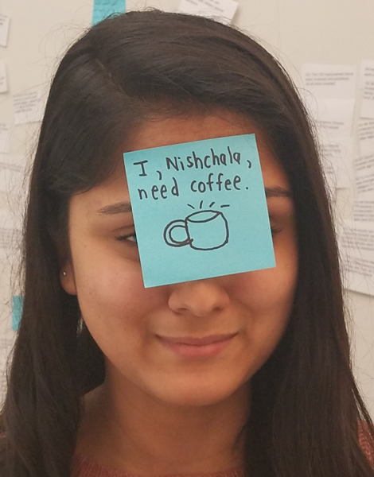
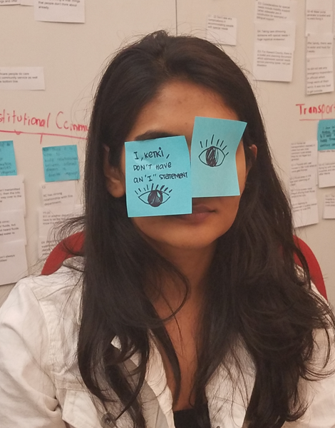
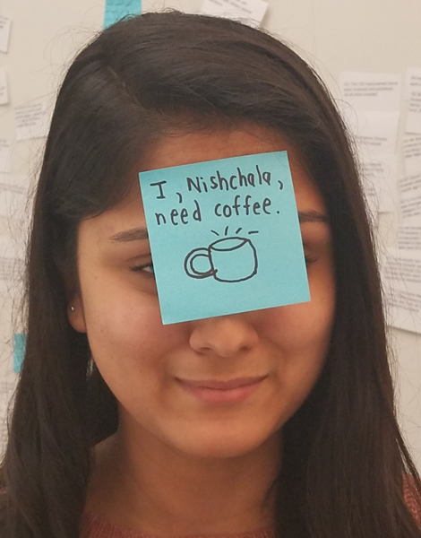
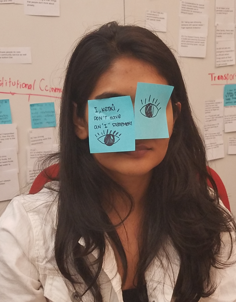
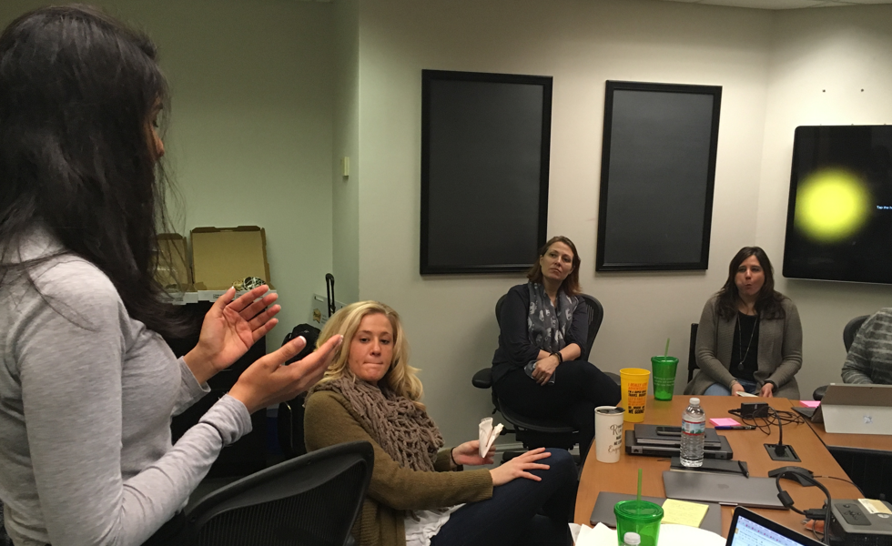
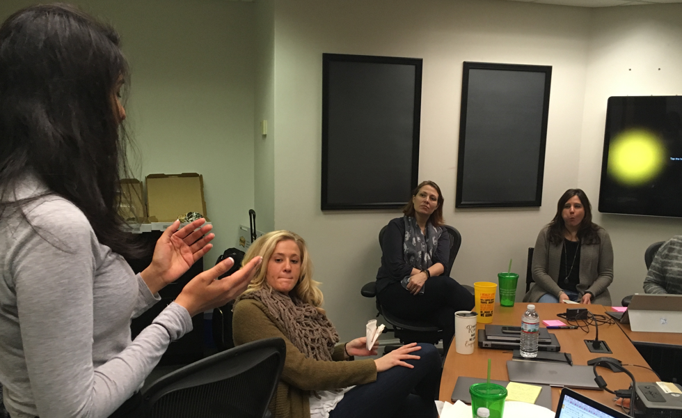

GUERILLA RESEARCH How can we help caretakers of special needs populations make better decisions?

Our research phase can be distinctely divided into two main categories.
Exploratory
Hospitals have an important role to play in a community, especially during disasters where stressed-out citizens choose to seek refuge inside the hospital’s facilities. But, surges of people sheltering at hospitals can compromise operations and quality of patient care. How might we design a system that balances these two needs?
METHODS USED
SECONDARY RESEARCH of special needs populations make better decisions?
INTERVIEWS How can we help caretakers of special needs populations make better decisions?
SURVEY How can citizens understand the capacity/availability of hospitals and alternative
 



 



Generative
Hospitals have an important role to play in a community, especially during disasters where stressed-out citizens choose to seek refuge inside the hospital’s facilities. But, surges of people sheltering at hospitals can compromise operations and quality of patient care. How might we design a system that balances these two needs?
METHODS USED
STAKEHOLDER MAPPING How can we help caretakers of special needs populations make better decisions?
SPRINTS of special needs populations make better decisions?
STORYBOARDING & SPEEDDATING How can we help caretakers of special needs populations make better decisions?
REVERSE ASSUMPTIONS How can citizens understand the capacity/availability of hospitals and alternative